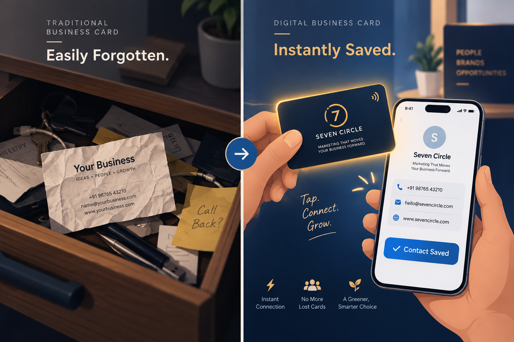
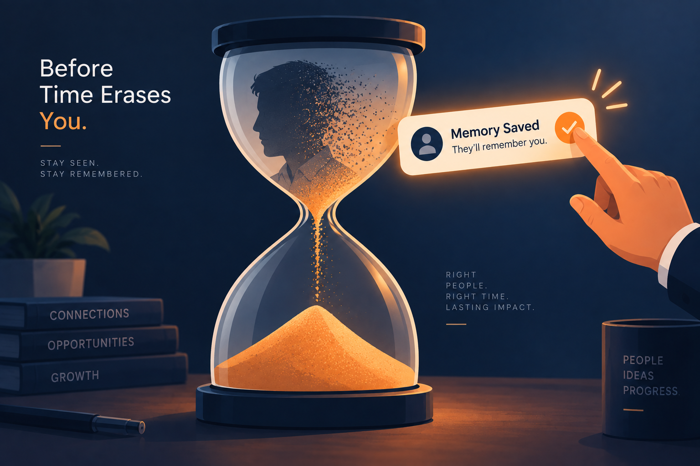
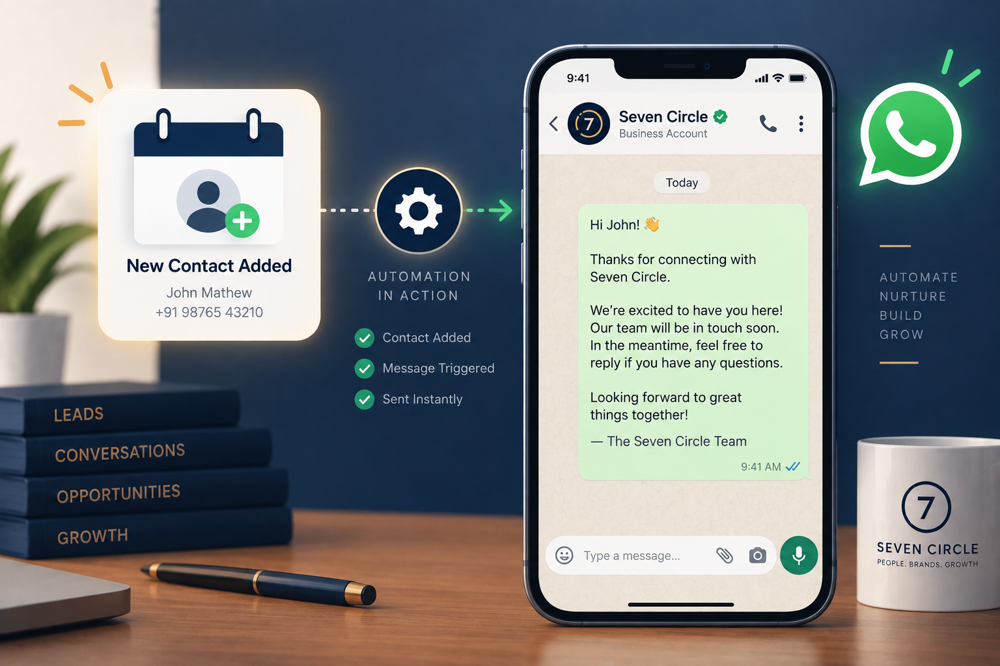
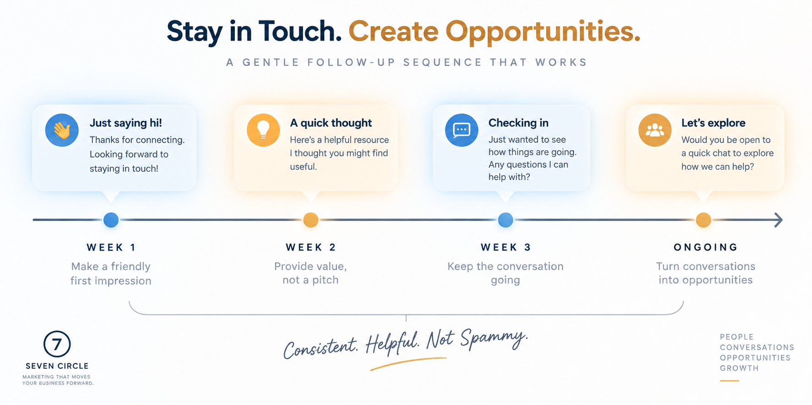
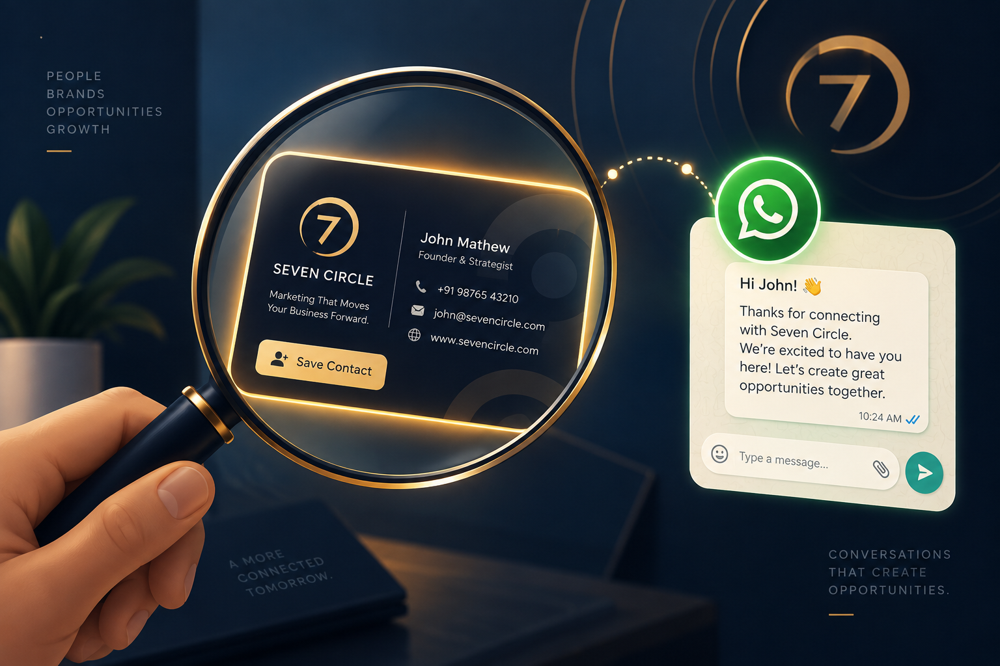

You meet someone at a networking event, a trade show or through a mutual friend. The conversation flows. They seem genuinely interested. They say, “Definitely reach out” or “Let’s stay in touch.”
You hand them a business card, or they type your number into their phone. And then… nothing. A week later, they do not remember your name. A month later, they could not tell you what your business does.
That promising lead quietly evaporates — not because they did not like you, but because your business never stayed on their radar.
The conversation went great. Then you became a stranger again.
Why first impressions do not survive
the next 24 hours.
People forget most new information within a day unless something actively reinforces it. A name, a business and a casual conversation at an event are competing with a busy schedule, dozens of notifications and every other introduction that happened that week.
If your only touchpoint is one conversation and a paper business card in a wallet, you have already lost the memory battle before it starts. This is not a “them” problem. It is a systems problem.

Five reasons your business
gets forgotten.
1. Paper business cards get buried or binned
A paper card sits in a wallet, drawer or pocket — disconnected from any action. There is no reminder, no easy next step and often no memory of who handed it over.
The fix: Use a digital business card that saves directly to their phone, with your services, links and a way to message you immediately.
2. There is no immediate follow-up
The highest-impact moment in a new connection is the first 24–48 hours. Most businesses let it pass in complete silence.
The fix: Send a warm WhatsApp follow-up while the conversation is still fresh — a simple message that reintroduces you and the reason you connected.

3. You are relying on memory, not a system
“I’ll message them later” is not a follow-up strategy — it is a hope. Without a system tracking who you met and when, good leads slip through the cracks of daily work.
The fix: Trigger a simple automated sequence the moment a new contact is added. No manual reminders required, no leads quietly falling through.
4. Your follow-up feels like a cold sales pitch
Generic messages such as “Hi, following up — are you interested?” feel transactional. They remind someone that you want something from them, not that you listened to the conversation.
The fix: Reference something specific they mentioned and lead with value — a useful answer, resource or introduction — before making an offer.

5. There is no ongoing touchpoint
One follow-up is not enough to stay top-of-mind for someone who is not ready to buy today. Without a light, consistent nurture sequence, even a good first message eventually fades.
The fix: Send a few spaced-out, value-first messages over two or three weeks. Stay present without becoming pushy or spammy.

Being remembered is
a system.
Being memorable is not about being more charming in the room. It is about what happens after you leave it.
| Old approach | System-based approach |
|---|---|
| Paper business card | Digital business card saved instantly to contacts |
| “I’ll follow up later” | Automated WhatsApp message sent within hours |
| One generic follow-up | Personalized message referencing the actual conversation |
| No further contact | Light automated nurture sequence over the following weeks |
| Relying on memory | Relying on a system that runs whether you remember or not |
Multiply one missed connection across every referral, event and introduction over a year, and “forgettable” becomes one of the most expensive leaks in a small business’s growth.
Turn one meeting into
a relationship.
At Seven Circle, we build the systems that help one-time meetings become long-term relationships without adding more manual work to your day.

- Digital Business CardsSave instantly to a new contact’s phone with your services, socials and a direct message button.
- WhatsApp AutomationSend a warm, personalized follow-up within hours of a new connection — automatically.
- Content and copywritingBuild nurture messages that feel useful and personal rather than robotic or sales-heavy.
- BrandingMake every touchpoint — card, message and follow-up — feel like one consistent business.
You only get one first impression. Let’s make sure it does not disappear the moment you walk away.
Questions worth
asking first.
How soon after meeting someone should I follow up?
Ideally within 24 hours, while the conversation is still fresh. Automation makes this consistent even when your schedule does not allow you to do it manually.
Will an automated follow-up feel impersonal?
Not if it is done right. A well-written message that references the actual conversation feels personal; automation simply makes sure it gets sent on time.
Do digital business cards get used more than paper ones?
They remove the biggest barrier to follow-up: the card saves directly to a phone and includes clickable links, so there is no lost card or manual typing later.
How many follow-up messages are too many?
Two to four spaced-out, value-first messages over a few weeks is usually enough. After that, shift to a lower-frequency channel such as WhatsApp broadcasts or email.
- A connection needs a next step.
- Follow up while the conversation is still fresh.
- Value beats pressure every time.
Your next lead should not depend on somebody remembering you by accident.
Book a free consultation ↗